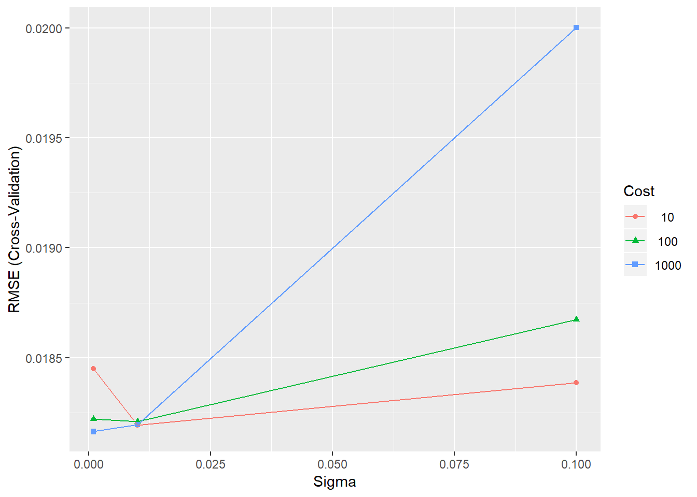

Motivations
Prerequisites
Conventions
Acknowledgements
About the Authors
1
Getting Started
1.1
Introduction
1.2
Network
1.2.1
Network: fundamentals
1.2.2
Road network and travel time as a variable for transportation
1.3
Forecasting
1.3.1
Space-time Series Forecasting
1.3.2
Forecasting Models of Spatial Network Data
1.4
Forecasting Data and Methods
1.4.1
Data Description
1.4.2
Applied Methodologies
1.5
Chapter Summary
2
Exploratory Spatio-temporal Data Analysis
3
Seasonal and Trend Decomposition with Loess Forecasting Model
3.1
Introduction
3.2
Chapter Summary
4
Support Vector Regression
4.1
Introduction
4.2
Support Vector Regression (SVR)
4.3
SVR to Predict Travel Time for Urban Road
4.4
Experiment Setup
5
Results are given for each of the parameter combinations in terms of the root mean squared error (RMSE), R squared and Mean Absolute Error (MAE).
5.1
Chapter Summary
6
Artificial Neural Network
6.1
Introduction
6.2
Chapter Summary
7
Summing-up
Appendix: setting-up R
Forecasting Network Data with R
5
Results are given for each of the parameter combinations in terms of the root mean squared error (RMSE), R squared and Mean Absolute Error (MAE).
plot
(SVRGridCoarse)

5.1
Chapter Summary